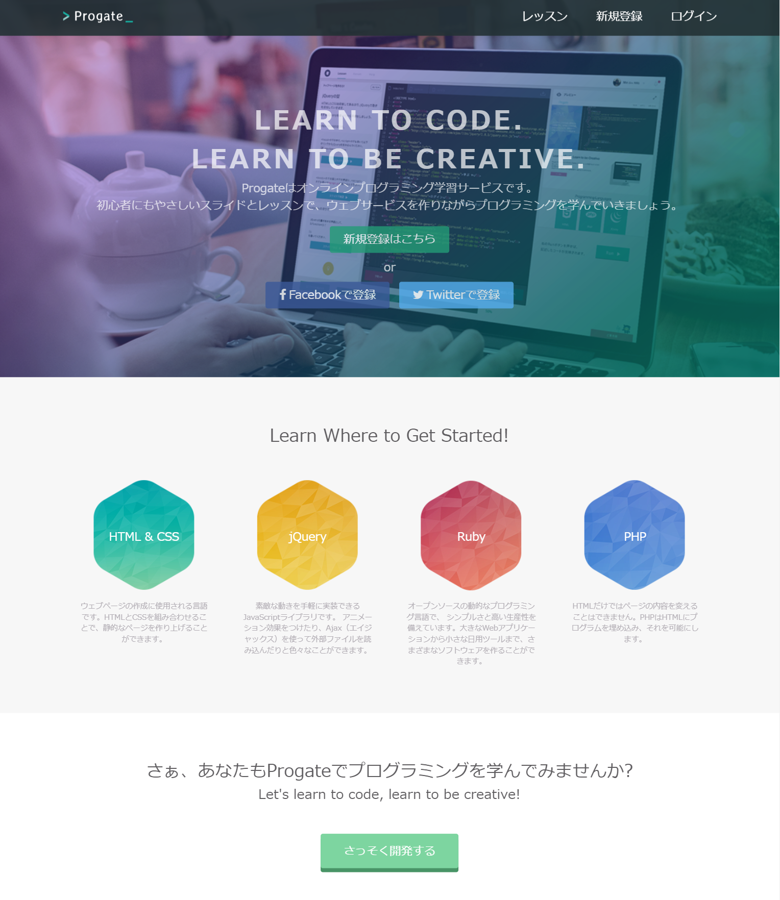

プロフィール
-
リョウ
はじめまして！
ポートフォリオサイトをご覧いただきまして、ありがとうございます。ユーザー様に対する”おもいやり設計”の実現を目指し、必ずクライアント様にご満足いただけるお手伝いができるように日々技術向上を心がけております。
ねこが大好きです！
スキル
-

HTML5
-

CSS3
-
JavaScript
-
jQuery
-
WordPress
-

AdobeXD
実績
-
架空LP Owl
フクロウを紹介する架空LPのデザインからコーディングをしました。
見やすいサイトにするために目にやさしい色合いや読みやすいフォントを選ぶことはもちろんのこと、どの画面幅でも快適に閲覧できるようにコンテンツの幅や文字の大きさ、余白の取り方に意識して制作しました。サイト内移動リンクやハンバーガーメニューも実装しています。HTML&CSS・JavaScript(jQuery)
-

上級編 道場コース
ワンカラムのシンプルなLPを仕様書に沿ってコーディングしました。
仕様書の内容を忠実に再現することを目標に、特にレイアウトが崩れないように制作しました。HTML&CSS
-
ポートフォリオサイト
猫と青をモチーフにしたサイトをデザイン・コーディングしました。
サイトを訪問された方にとって居心地が良く、私の制作に対する想いや姿勢をまっすぐに伝えられる場を目指して制作しました。HTML&CSS・JavaScript(jQuery)
-
cooks様 HP模写
WordPressのテーマを用いてHPを制作しました。
既存のサイトをそのまま模写するのではなく、情報を付け加えたり、配色を変えたりして自分なりにアレンジしました。また、不必要な余白ができてしまいそれを消すのに苦戦しましたが、デベロッパーツールで余白のクラスを探し、削除することで解決しました。WordPress・HTML&CSS
-

架空HP 模写
トップページ、会社概要ページ、事業内容ページ、採用情報ページ、コンタクトページの５つのページから構成されているwebサイトです。
複数のページからできているサイトを制作するのは初めてでしたが、noteを通して一般的なコーポレートサイトの構成を学べました。HTML&CSS
-
架空NPO法人 LP
猫の殺処分0を目指す架空NPO団体のLPをデザイン・ライティング・コーディングしています。
少しでも多くの方に動物愛護団体の活動や、動物福祉について知ってもらうために、 団体や活動について全く知らない方でも理解しやすく、親近感の湧くサイトにすることが目標です。HTML&CSS・JavaScript(jQuery)・AdobeXD
サービス
-
コーディング
お預かりしたデザインカンプに従い、レスポンシブ対応まで正確にコーディングいたします。
-
LP・HP制作
クライアント様との連携を密接に行い、ニーズを的確に捉えたデザインを提案・制作いたします。
-
レスポンシブ対応
PC・タブレット・スマートフォン それぞれの画面表示に対応いたします。
デザインに関しましても安心してお任せください。
お問い合わせ
LINE・Skype・TwitterDMからのお問い合わせをお待ちしております。